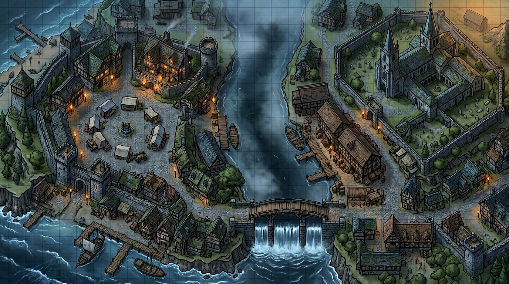
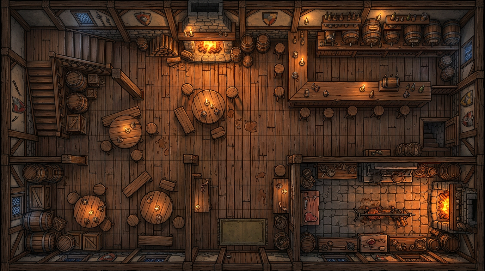
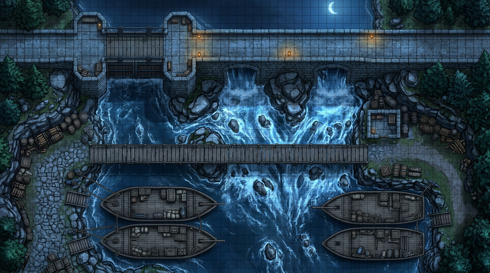
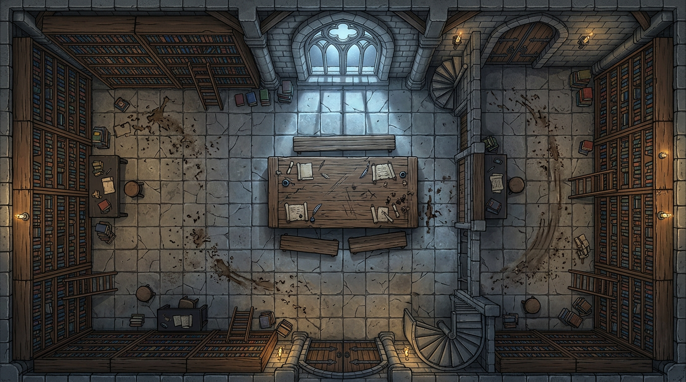
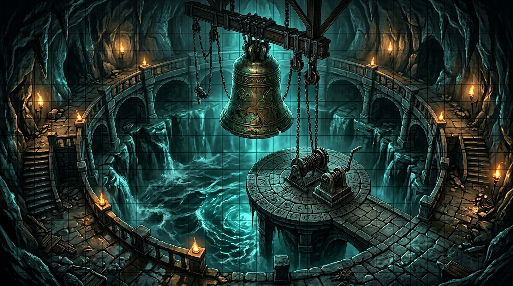
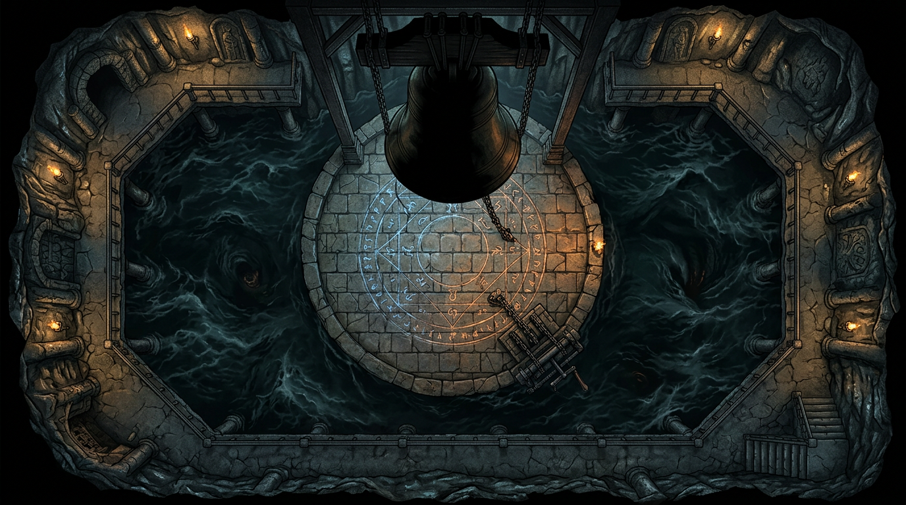

Стартовое приключение: «Стеклянный звон»
Две сессии по 3,5–4,5 часа. Город Серый причал у реки (можно заменить на Торнвельд).
Часть I. Что произошло на самом деле
Прочитайте это до игры. Это не для игроков — полная хронология и мотивы, чтобы вы вели сцену уверенно.
Хронология правды
Пятнадцать лет назад. При обители Св. Эвальда горела стекольная мастерская. Погиб ребёнок мастеровой Лиоры — дым, обрушение, она не успела. Муж её тогда же утонул в реке (пьянство или самоубийство — город шептал по-разному). Лиора ненавидит церковь: священник той поры запретил ей хоронить младенца рядом с освящённой землёй — «стекольщица нечиста».
Десять лет назад. Лиора находит в барахле старый трактат (часть попала в библиотеку обители): в нём сказано, что колокол «Стеклянный звон», отлитый с примесью речного песка, связан с руслом. Под запрудой, где когда-то стоял утопленный пригород, «спит эхо первого удара в колокол» — не бог, а накопленная боль всех, кто утонул. Она решает: если разбудить это эхо правильным звоном, река вернёт ей сына — не живым, но голосом, признанием. Это безумие, но для неё оно логично.
Пять лет. Лиора собирает культ — бедняки, вдовы, те, кого река забрала. «Пастыри стекла» — они режут верёвки барж, чтобы напугать власть и отвлечь от ночных работ: в бочках — колотое стекло, соль, редкие соли для сплава — всё идёт в камеру под шлюзом, чтобы нарастить «семя» в теле **живого молотка».
Год назад. Жрец Клем — слабый человек, долги перед купцом Эрвиным. Лиора шантажирует его: либо он даёт доступ к колокольне и молчит, либо Эрвин выставляет долг церкви. Клем соглашается. Он думает, что она лишь «починит колокол». Он не знал про похищение.
Три недели назад. Лиора и двое культистов хватают звонаря Бейли с лестницы колокольни. Ему вливают настой — он в бреду, но жив. Его волокут в камеру под колоколом и начинают врастить в кожу и сухожилия стеклянную нить (ритуал из трактата). Бейли — не жрец, но у него идеальный слух и руки звонаря — он станет живым молотом, который одним ударом вогонит в колокол «правильную» вибрацию.
Сейчас. Бейли привязан под колоколом; вода бьёт по ногам; стекло ползёт по рукам к металлу. Лиора ждёт третью ночь после полнолуния — «перелом воды», когда шлюз даёт резонанс. Колокол наверху звонит сам (ветер, натяжение нитей из камеры) — мокрый звук: внутри колокола конденсат и осколки из трещин, которые дала связь с Бейли.
Что под запрудой на самом деле. Не демон и не дракон. Сгусток страдания и звука — аберрация: тысячи микроскопических колокольчиков из стекла и ила, пульсирующих в такт сердцу жертвы наверху. Если ритуал завершить — «эхо» выплеснется в город как волна отчаяния (стресс, безумие, суициды) или река вздёрнется и сломает запруду — в зависимости от того, как герои вмешаются. Лиора верит, что услышит голос сына. На деле услышит шум тысячи утонувших — и сойдёт с ума или умрёт счастливой. Бейли в любом жёстком финале — жертва, не злодей.
Часть II. Перед первой сессией
- Откройте готовые PNG в
maps/(раздел ниже) или сгенерируйте свои по описанию сцен. - Прочитайте Часть I ещё раз.
- Решите: кто нанимает партию — Мирта (поиск Бейли) или гильдия (саботаж) — или оба заказа в одном брифинге.
- ЧЦ держите как ориентиры; подстраивайте под партию.
Сессия 1. «Мокрый колокол»
Баланс: половина времени — расследование, половина — экшен (таверна + погоня/засада).
Сцена 0. Брифинг у обители (крючок)
Место: дворик обители, поздний день, пахнет супом и речной сыростью.
Сестра Мирта — сухая женщина лет пятидесяти, руки в швах, голос ровный.
Мирта: «Добро пожаловать. Я не люблю нанимать мечи, но полиция смеётся: мол, звонарь пьяница, сам ушёл. А Бейли трезвый, как стекло. Третий день нет его. Комната в бельэтаже колокольни — пусто, постель холодная. Колокол… я слышала две ночи: будто внутри кто-то хрипит. Отец Клем запретил сёстрам подниматься наверх без него. Я хочу человека и правды. Платим столько, сколько сочтёте справедливым (назовите сумму сами). Согласны?»
Если спросят про Клема:
Мирта: «Клем нервничает с прошлой недели. Молится дольше обычного. Я думала — к Посту готовится. Теперь не уверена.»
Если партия пришла по заказу купцов (саботаж), добавьте встречу с фактором на рынке:
Фактор Торрен (резкий голос): «Верёвки на баржах режут. Если шлюз уйдёт — нижний город вымоет. Найдите, кто, и остановите. Платим отдельно от сестёр — или вместе, если договоритесь. Мне нужен результат, не слезы.»
Сцена 1. Колокольня и комната звонаря
Карта: район обители — колокольня у храма.

Лестница: следы чужой обуви (не монашеской) — Внимание / Анализ ЧЦ 10.
Перила: соль, царапины стеклом — Медицина / Природа ЧЦ 11 — «это не кровь; в постели — стеклянная пыль».
Подушка: записка при Скрытность или Внимание ≥ 12: «Не звони на рассвете. Они слушают снизу. — Б.»
Отец Клем может встретить их у подножия (он следил):
Клем: «Вы от сестёр? Хорошо. Наверху опасно — ветер срывает кирпич. Я пойду с вами. пауза …Бейли — хороший мальчик. Пусть Господь хранит его.»
Если спросят, почему запрет на колокольню:
Клем: «Страх — не грех. Там ветер… и слухи. Я обязан смотреть, чтобы сёстры не падали.»
Если Проницательность ≥ 11 при взгляде на Клема — он избегает глаз, ладони мокрые.
Если Клема ещё не ломали (нет улик о бочках), он держится до таверны/запруды. Если игроки давят здесь (Запугивание ≥ 12 или прямое уличение):
Клем: «Стойте! Я… я не хотел… Мне сказали — только ключ! Что она возьмёт кого-то — я не знал! всхлип Это Лиора! Она жива — в шлюзе! Эрвин всё возит! Я проклят…»
(Если Клем сорвался рано — сократите детектив; если нет — он молчит до сцены с уликами.)
Сцена 2. Набережная и Гарн
Гарн сидит на ящике, чинит сеть, пахнет рыбой и водкой.
Гарн: «Бейли? А… тихий был. Не пил, как другие. Видел я три ночи назад — с баржи сбросили бочки. Не вниз по людям — к запруде. Звон такой — как сыпется стекло в воду. Мне лет семьдесят, я не иду к шлюзу ночью. Тьма там есть.»
Если дадут монету:
Гарн: «Ладно. Эрвин с теми бочками знаком. Всегда ухмыляется, когда платят. Иди к «Трём бочкам».»
Сцена 3. Ратуша / таможня
Чиновник зевает, бумаги пахнут сыростью.
Чиновник: «Бочки без печати? Обитель, склад три? Странно… печать кривая. Сама посмотри, если хочешь. Я кофе пойду.»
Анализ или Обман ≥ 12 — печать подделка (узор креста перевёрнут).
Если игроки задержат чиновника вопросами:
Чиновник: «Отстаньте. Я цифры пишу, не криминал. Всё, что мимо меня — к настоятельнице несите.»
Сцена 4. Таверна «У трёх бочек» — социалка и драка
Карта:

Если партия до разговора с Эрвином расспрашивает зал:
Бармен: «Эрвин? Сидит в углу, как всегда. Кредит мне должен — не защищайте его, если что пойдёт не так. Кружки — за полцены.»
Эрвин — полный, потный, за столом у двух громил. Увидев стражу или оружие — поджимается.
Эрвин: «Я ничего не… то есть купец я честный! Бочки? Какие бочки? тихо …Если это про Лиору — я только возил. Она платит хорошо. Стекло, соль… я не спрашивал! Она сказала — для ремонта колокола!»
Громила 1 (встаёт): «Эрвин, ты слишком много болтаешь.»
Громила 2: «Уйдём через заднюю. Или заткнём им рты.»
Эрвин (визг): «Нет-нет! Я скажу! График у меня в поясе! Третья ночь после полнолуния — перелом воды! Она там будет! На запруде! Её не трогайте — она безумная!»
Развилка:
- Успешная Дипломатия — Эрвин вышел в коридор, отдал записку без драки.
- Провал или наглость — громилы бьют первыми — бой (толпа даёт +1 укрытие за столом).
Бармен (в драке): «Не ломайте столы! Стражу! Кто платит за кровь?!»
После боя или уговоров Эрвин (если жив и на свободе):
Эрвин: «Берите записку! Я… я в Морхейм! бежит»
(Записка: «III ночь после луны — вода ломается. К. ждёт молот. — Л.»)
Сцена 5. Погоня или засада у запруды
Карта:

Если за Эрвином погоня — он бежит к мосту, зовёт людей Лиоры.
Засада: три Наёмника + один Стрелок (см. бестиарий). Стрелок на высоте (условно Даль к настилу).
Наёмник: «Лишние уши — в реку!»
Стрелок: (не кричит — только стреляет)
После победы или ухода — гудит колокол сам по себе — река отступает на секунду — на илистом дне видна огромная рука из стекла и ила (или силуэт — по вкусу ужаса).
Клиффхэнгер — далёкий крик Бейли (если хотите): «Пастырь… не отпускай…»
Сессия 2. «Перелом воды»
Сцена 6. Библиотека обители
Карта:

Мирта (шёпотом): «Трактат… я не знала, что он хранится открыто. «Песок реки в колоколе слышит дно»… Боже.»
Если История / Магические знания ≥ 11 — герои понимают связь русла и ритуала.
Сцена 7. Клем в каморке / под арестом
(Если Клем уже всё сказал — замените на письмо от него.)
Клем: «Я отдам ключ… от люка в колокольне. Он ведёт вниз, к шлюзу. Лиора сказала — Бейли добровольно… но я слышал крики. плачет Я не священник — я трус. Убейте меня или спасите его — но не дайте ей ударить в колокол… или город… я не знаю, что хуже…»
Сцена 8. Спуск и бой
Волна 1: два Культиста + один Ножник (бестиарий).
Культист 1: «Вода помнит.»
Культист 2: «Пастырь зовёт.»
Волна 2: каждые 2 раунда у решётки — +1 стресс (вода поднимается).
Лиора с галереи (кричит): «Не подходите! Один удар — и боль кончится! Для всех!»
Лиора (когда ранена): «Вы не знаете… что ждёт мать… когда река забрала ребёнка… всхлип Я услышу его…»
Сцена 9. Финал — камера под колоколом
Антураж:

Баттлмап для боя:

Бейли (искажённый шёпот, вода глушит): «Режь… режь меня… не дай… ударить…»
Лиора (если жива, у рычага): «Смотрите! Стекло любит его! Он станет молотом! Один удар — и эхо встанет мягко! Или ломайте — и река сорвёт плотину! Выбирайте! Я уже не могу остановиться!»
Лиора (если её убили, последние слова): «Теперь он… свободен… как… я…»
Таблица исходов (ведущий зачитывает последствия честно)
| Вариант | Что происходит |
|---|---|
| А. Ритуал завершён (удар в колокол по замыслу Лиоры) | Бейли поглощён; город переживает волну отчаяния или странное облегчение (снимите 1 стресс «невинным» NPC); голос в колоколе слышен по ночам. |
| Б. Ломают механизм / перерезают верёвки запруды | Наводнение нижнего города; Бейли вытащен, но калёка (без рук или без слуха). |
| В. Убивают Лиору у рычага | Ритуал рвётся; Бейли умирает от шока и стекла в теле; город цел. Лиора: «Теперь он свободен…» |
| Д. Жертва героя (по согласию) | Воля ≥ 12 или 3 стресса; исход согласуйте — редко без цены. |
Идеального «все спасены» нет.
Эпилог — Мирта (одна фраза): «Колокол теперь… помнит.»
Бестиарий приключения
ЧЦ защиты = 8 + Ловкость + доспех. Урон = (итог атаки − ЧЦ) + бонус.
Наёмник Эрвина
- Угроза: низкая
- Тело 3, Ловкость 2, Разум 1, Воля 1
- Раны 6 · кожа +1 к ЧЦ
- Дубина +1
- Реплика: «Деньги платят — мы бьём.»
Стрелок на засаде
- Угроза: низкая
- Тело 2, Ловкость 3, Разум 1, Воля 2
- Раны 5
- Лук +2, предпочитает Даль
- Особое: укрытие +1 на карте запруды.
Культист «Пастыря»
- Угроза: средняя
- Тело 3, Ловкость 2, Разум 2, Воля 4
- Раны 8
- Короткий меч +1
- Особое: перед смертью 1 стресс ближайшему в Рукопашной (крик).
Ножник культа
- Угроза: средняя
- Тело 2, Ловкость 4, Разум 1, Воля 2
- Раны 7
- Кинжал +1
- Особое: первая атака в сцене +1 к итогу (внезапность).
Лиора, «Пастырь стекла»
- Угроза: высокая
- Тело 2, Ловкость 3, Разум 4, Воля 5
- Раны 9
- Дальняя магия «Осколки» +2, кинжал +1 в рукопашной
- Цель в бою: дойти до рычага (1 ОД на Сдвиг к зоне рычага).
- Реплики: см. сцену 8–9.
Подсказки по системе
- Проверки — 2d6 + атрибут + ранг; ЧЦ как ориентир.
- Бой — Рукопашная / Рядом / Даль.
- Магия Лиоры — дальняя атака по правилам главы 4.